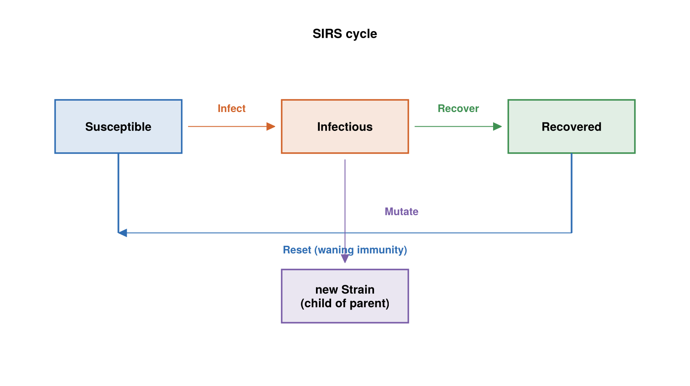
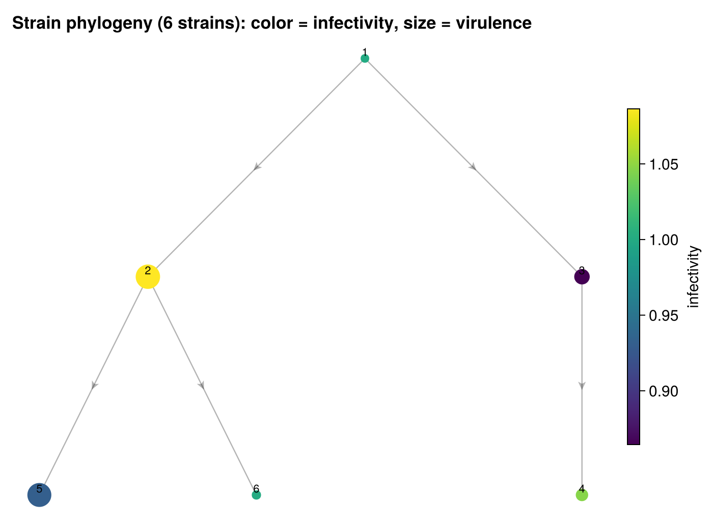

The SIR Village Model
SIR Village is an individual-based epidemic simulation with a twist: the pathogen itself evolves. People move around a village, catch and recover from disease at rates that differ from person to person, and the disease mutates into new strains that escape prior immunity. It is the largest and most feature-rich model in the repository.
Where it comes from
There is no cited paper; the origin is a design narrative in the module docstring. The author's stated goal:
The goal is to make a disease simulation that's a little bit fun. You may have seen disease simulations that show susceptible-infectious-recovered (SIR) transitions for individuals. That's easy to do without any framework, so let's make a halfway realistic simulation...
Four design choices give the model its character:
- Gamma recovery. Recovery time is Gamma-distributed — "the classic rate use in disease studies, not Exponential."
- Heterogeneous susceptibility. Each person has a different robustness; "epidemiologists have long understood this is crucial for understanding disease spread."
- Localized contact through movement. People "move around a city, or let's say a village, so that they have localized sets of contacts. Each person follows a semi-Markovian walk around a subset of locations." That movement model is derived in Characterizing Travel.
- An evolving pathogen. Credited to a colleague who "railed at me for not including evolution in SIR simulations" — the disease mutates into strains with different infectivity and virulence, and "every new strain escapes the previous one, so it can reinfect a person."
What it models
An agent-based SIRS epidemic with pathogen evolution, set in a village. Individuals move among discrete locations; disease transmits only between people who share a location. The three disease states are Susceptible, Infectious, and Recovered — and because a Reset event returns recovered people to susceptible, immunity wanes and the model is SIRS rather than plain SIR. There is no latent compartment, so it is not SEIR.

The three disease states and the events that move a person between them; Mutate acts within Infectious, giving birth to a child strain.
Every individual is tracked separately with its own parameters: a robustness draw that governs susceptibility and recovery speed, a personal subset of locations it visits, and personal dwell and exit parameters. The pathogen is a growing set of strains, each with an infectivity and a virulence, that are born inside infectious people and can reinfect those who recovered from an ancestor strain.
State
Individuals carry their disease state, current strain, and current location:
@enum DiseaseState Susceptible Infectious Recovered
@keyedby Individual Int64 begin
state::DiseaseState
strain::Int64 # infecting strain id; 0 if none
haunt::Int64 # index into this person's haunts, not a global location id
endPer-person configuration is an immutable struct, never mutated after construction:
struct IndividualParams
robustness::Float64
haunts::Vector{Int64} # global location ids this person visits
exit_sum::Vector{Float64} # per-haunt Weibull rate constant (dwell time)
exit_frac::Vector{Float64} # per-haunt destination probability
endLocations track who is present, and strains form a small phylogeny:
@keyedby Location Int64 begin
individual_cnt::Int64
individuals::Vector{Int64} # roster of ids currently here
end
@keyedby Strain Int64 begin
infectivity::Float64 # scales infection rate
virulence::Float64 # scales recovery time
parent::Int64 # parent strain id; 0 for the founding strain
endThe whole village is the observed physical state:
@observedphysical Village begin
actors::ObservedVector{Individual,Member}
actor_params::Param{Vector{IndividualParams}} # immutable config, unobserved
locations::ObservedVector{Location,Member}
strains::ObservedDict{Int64,Strain,Member}
next_strain_id::Int64
endTwo modeling decisions here are worth calling out, because they were driven by the framework:
strainsis anObservedDict, not anObservedVector. Strains are born at runtime, and a fixed-extent vector throwsFixedExtentErroronpush!. A keyed dict grows safely;next_strain_idhands out fresh ids without reading the dict's length inside an event body. (Before this change, any run long enough to mutate would crash — see the usage page.)actor_paramsis wrapped inParam{...}to mark it unobservable. As a plain vector, reads of it would emit whole-field read notifications that the derivation coverage oracle would flag.
Events
Six event types drive the simulation, plus a bootstrap InitEvent.
Travel(who) — always enabled; a rate-driven walk. Its clock is Weibull(2, scale) with scale = 2 / exit_sum[haunt], the linearly-rising hazard from the movement model. Firing chooses a destination haunt from a Categorical over exit_frac, updates the source and destination location rosters, and sets the new haunt.
Infect(source, sink) — enabled when the source is Infectious, the sink is Susceptible, and both are at the same location. Its clock is Exponential(inv(infectivity / robustness)), so a more robust sink or a less infective strain means a longer wait. Firing copies the source's strain to the sink and makes it Infectious.
Recover(who) — enabled while a person is Infectious. Its clock is the classic Gamma(3, inv(robustness / virulence)); a more virulent strain lengthens recovery. Firing moves the person to Recovered.
Reset(who) — enabled while a person is Recovered. Its clock is Exponential(inv(0.05)) (mean 20 time units). Firing returns the person to Susceptible with strain 0 — this is the "S" that makes the model SIRS.
Mutate(carrier) — enabled while a person is Infectious; "mutation happens within the sick person." Its clock is Exponential(inv(0.01)). Firing draws a child strain's infectivity and virulence from a bivariate lognormal centered on the parent's values, creates a new Strain with parent set to the current strain, assigns it next_strain_id, and switches the carrier to the new child. This is the runtime "birth" that requires the dict-keyed strains.

The parent field of each Strain forms a tree rooted at the founding strain (id 1). Node color is infectivity, node size is virulence; both drift from the parent's values through the bivariate-lognormal mutation kernel.
InitEvent() — the bootstrap. It places each actor at a random haunt, infects the first ten percent of the population with the founding strain, and seeds a few extra strains by directly firing Mutate a handful of times.
Invariants
The model declares @invariant blocks that a CheckInvariants policy verifies after every event: there is always at least one strain, strain rates are nonnegative, every strain's parent id is valid, each location's count matches its roster, and every sick actor carries a strain. The usage page shows how to run with these checks enabled.
The derived twin
SIRVillageDerived (src/sirvillage/sirvillage_derived.jl) is the derived-generator twin. The physical state, events, and timing are identical; the difference is that Infect, Recover, Reset, and Mutate have their hand-written trigger blocks deleted and let ChronoSim derive triggers from the precondition. Travel stays hand-written in both twins, because its precondition is true and reads no state.
Infect is the headline case. Its precondition reads actors[source].state/.haunt and actors[sink].state/.haunt, so a single change to one person's state fires two derived generators — that person as a source with every possible sink, and as a sink with every possible source — proposing on the order of N candidate infections per change. The precondition's source_loc == sink_loc clause then filters those over-proposals back to exactly the co-located pairs the hand-written generator would have produced. This over-approximate-then-filter behavior is measured in test/test_overapprox.jl.